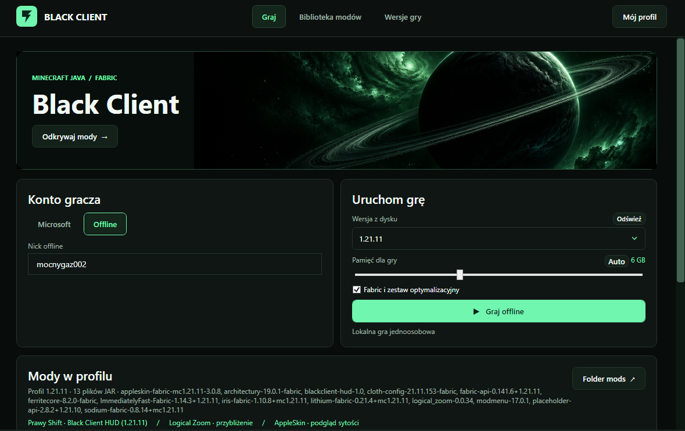

Optymalizacja wydajności
Launcher zbudowany wokół płynności gry. Wydajność jest tu priorytetem, a nie dodatkiem.
Twój Minecraft. Twoje zasady.
Nowoczesny launcher Minecraft Java Edition oparty na Fabric. Zarządzaj wersjami gry, modami i pamięcią RAM w jednym szybkim, przejrzystym interfejsie.

Dziewięć rzeczy, które launcher robi za Ciebie, żebyś mógł po prostu grać.
Launcher zbudowany wokół płynności gry. Wydajność jest tu priorytetem, a nie dodatkiem.
Uruchamiaj grę z lekkim loaderem Fabric.
Przeglądaj mody w jednym miejscu.
Instaluj i przełączaj wersje gry bezpośrednio z launchera.
Własny HUD Black Client w trakcie gry.
Ustaw, ile pamięci ma dostać gra.
Zaloguj się kontem powiązanym z Minecraftem.
Uruchom grę bez logowania.
Launcher zawiera gotowy zestaw modów poprawiających wydajność, więc możesz zacząć grać od razu.
Wyszukaj mod po nazwie lub opisie i zawęź listę kategorią. Kliknij kartę, aby zobaczyć więcej.
Wybierz wersję Minecrafta, zainstaluj ją i uruchom z Fabric. Przełączanie między wersjami odbywa się w launcherze, bez ręcznego kopiowania plików.
Historia zmian launchera, od najnowszej wersji.
Zainstaluj launcher, zaloguj się kontem Microsoft lub włącz tryb offline i zacznij grać.
Pobierz dla WindowsBlack Client to launcher do Minecraft Java Edition oparty na Fabric. Pozwala zarządzać wersjami gry, modami i ustawieniami uruchamiania w jednym miejscu.
Tak, launcher obsługuje logowanie kontem Microsoft. Dostępny jest także tryb offline.
Tak, launcher pozwala ustawić, ile pamięci RAM ma otrzymać gra.
Aktualnie dostępna jest wersja dla systemu Windows.
Nie. Black Client nie jest oficjalnym produktem Mojang Studios ani Microsoft.